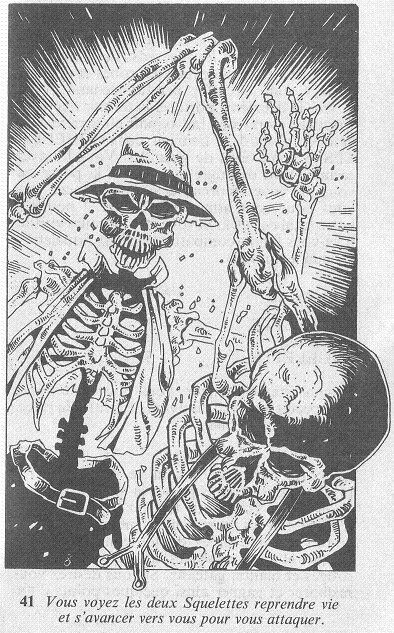

En commençant par le coin le plus éloigné de la pièce, vous ouvrez les
placards. Le premier est une espèce de garde-robe : des robes et des
chemisiers sont, en effet, pendus dedans. Vous ouvrez la deuxième porte,
et la terreur que vous éprouvez alors vous fait bondir en arrière. Car
dans ce placard, se tiennent deux SQUELETTES à demi vêtus de guenilles.
Vous les avez certainement dérangés en ouvrant la porte, car vous les
voyez reprendre vie, et avancer vers vous pour vous attaquer.

Ajoutez 2 points à votre total de PEUR. Si vous êtes toujours vivant, il
va vous falloir combattre ces deux Squelettes chacun à son tour.
HABILETÉ ENDURANCE
Premier SQUELETTE 6, 6
Deuxième SQUELETTE 7, 6
Si vous êtes vainqueur, vous pouvez continuer à
explorer la pièce
, ou la quitter.